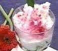

Es Puding Tape

Bahan:
- 1 bks Agar -agar bubuk hijau
- 600 ml air
- 150 gr Gula Pasir
- 250 gr Tape Ketan Hijau
Isi:
- 1 bh Kelapa Muda
- 300 ml Santan
- Sirup Merah
- Susu Kental Manis
- Es Serut
Cara Membuat:
- Didihkan air, campur dengan agar -agar. Aduk rata dan tambahkan gula pasir. Setelah
mendidih, masukkan tape, aduk rata dan masak sebentar.
- Tuangkan ke dalam loyang, hilangkan uap panas dan masukkan dalam lemari pendingin.
- Setelah dingin, potong bentuk dadu dan tuangkan ke dalam gelas. Tambahkan kelapa
muda dan santan atau susu.
- Beri es serut, tambahkan susu kental manis dan sirup merah.
- Hias dengan daun pandan dan sajikan.